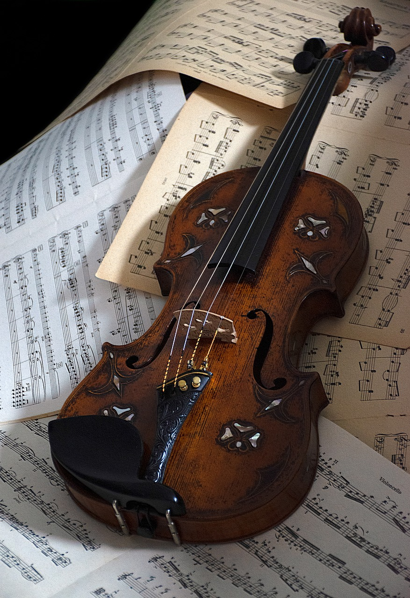
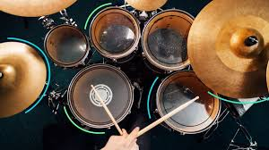
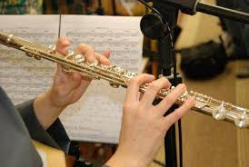
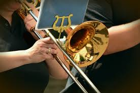
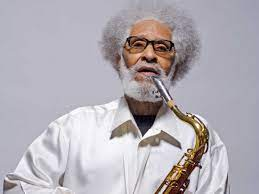
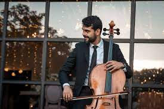
Para hacer una cancion es necesario tener un sonido, esto es lo que le da el ritmo y vida a la musica, sobre todo que cuando pensamos en ella directamente nuestro cerebro crea
la idea de que la musica es un sonido armonioso, normalmente se le agrega letras para contrastar y darle un significado mas profundo, mientras que otras veces puede ser solo un
piano siendo tocado, mientras sea un sonido de buen gusto o ritmo, se considera musica, tenga o no letra.
Los instrumentos son partes clave en una cancion, pues sin ellos no seria posible crear una melodia que es lo que se le conoce al ruido que hacen los intrumentos con sentido y armonia,
hoy en dia se utilizan instrumentos mas dependientes de la tecnologia, pero antes era mas de instrumentos como piano, guitarra, violin entre otros, esto no quiere decir que no sean usados a la hora de crear una cancion, lo que quiere decir es que hay ams posibilidades y ya que los gustos y tendencias musicales cambian, estas mismas se acoplan a nuevos sonidos y
temas.
Algunos de los instrumentos mas comunes y con mas relevancia hoy en dia son:
| El piano | |
| El violin | 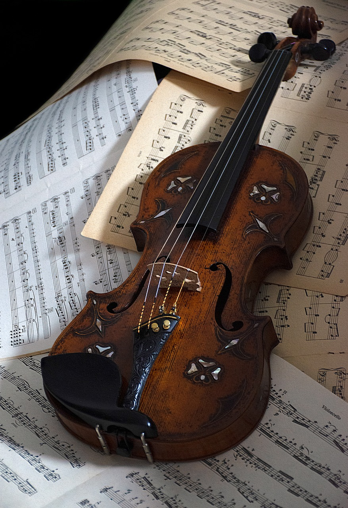 |
| La guitarra (electrica o no) | |
| La bateria | 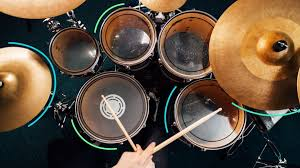 |
| El bajo | |
| El ukelele | |
| La flauta | 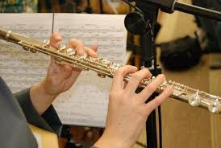 |
| La trompeta | 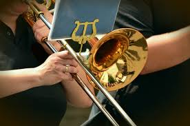 |
| El saxofon | 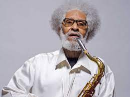 |
| El Cello | 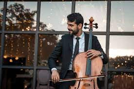 |
En cada uno de estos instrumentos, dando click, podremos encontrar su historia e informacion adicional a ellos.
En conclusion, la musica no es musica si no hay melodia, y la melodia se crea con los intrumentos, ya sea con uno o varios.